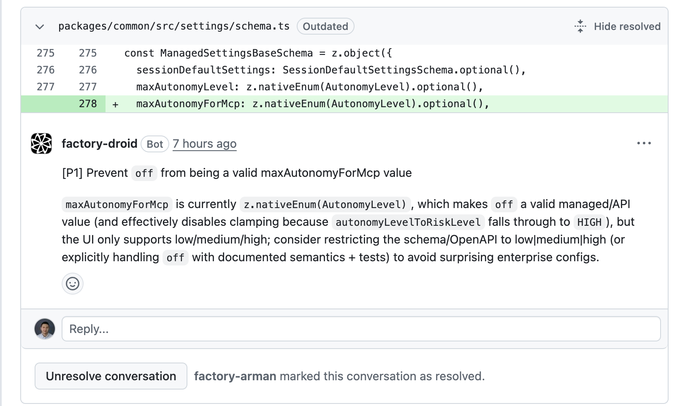

Skills Turn One-Time Solutions into Reusable Knowledge
Composable procedural knowledge for agents
Folders with instructions and scripts that teach agents specific jobs
Progressive disclosure -- only metadata loaded initially, full content on demand
Hundreds of skills without bloating context
Skills can include scripts as tools -- self-documenting, modifiable, live in the file system
Examples:
/fix-issue 1234/incident-runbook/code-review
Use Case 2: Code Review & Testing
Low risk · High leverage
Agent as FIRST pass -- logic errors, security, style violations
Human review as SECOND pass -- business logic, architecture
Reduces cycle time by ~3.5 hours per PR
Can be configured as automated PR reviewers in your CI pipeline
The writer/reviewer pattern:
Agent writes code→Separate agent reviews→Human final review
Automated PR Review
Droid reviews every PR -- catches schema issues, security gaps, and logic errors before humans look at it

Use Case 3: Coding
Where most daily work happens
This is not vibe coding -- vibe coding works for prototypes, but production needs structure.
ExploreAgent reads files, understands patterns. No changes.
PlanAgent creates detailed plan. You review and edit it.
ImplementAgent codes against the plan, runs tests.
CommitAgent creates commit, pushes, opens PR.
Stripe ships 1,300+ zero-human-code PRs per week. OpenAI: team of 3-7 built 1M lines, 0 manually-written code, in 1/10th the time. These aren't toy projects -- but they follow this loop.
15 Minutes of Planning Saves 2 Hours of Corrections
The secret to high success rates
What you want at the end -- requirements, not implementation details
Which patterns in the codebase to follow
Constraints, edge cases, and files that will change
How to verify it works
Vague prompt:
"Add user authentication"
Effective prompt:
"Add JWT auth following the pattern in src/middleware/auth.ts. Include refresh tokens and rate limiting on login. Write integration tests using UserRepository."
Give the Agent a Way to Check Its Own Work
Unit tests and integration tests
Screenshots (Puppeteer, browser automation)
A running dev server it can hit
Expected output to compare against
Multimodal input -- drop in a design mock, give it a dev server, it builds the UI in a loop
Context management -- the core constraint:
Clear context between unrelated tasks
After 2 failed corrections: start fresh with a better prompt
Use Case 4: PRDs & Engineering Design Docs
Agents as your first draft partner for technical writing
Product requirements: Describe what you want in a few sentences → agent generates structured PRD with user stories, acceptance criteria, edge cases
The interview pattern: Agent asks YOU questions to extract requirements you hadn't thought of, then drafts the doc
Engineering design docs: Agent reads the codebase → drafts architecture, API contracts, trade-offs
Deep research: Agent searches the web for prior art and compares approaches before drafting
The first draft is 80% there -- your job is the last 20% of judgment.
Use Case 5: Project Management
Handling coordination work that eats into engineering time
Standup summaries: "What did I ship this week?" → agent reads git log, generates a summary
Ticket triage: Auto-classify issues by severity and component, route to the right team
Sprint tracking: Flag at-risk items, surface stale PRs, identify blockers
Follow-ups & release notes: Auto-create tickets from PR comments and post-mortems; diff between tags for changelogs
Engineers spend 30-40% of time on coordination, not coding. Let agents handle the glue work.
Structured findings root cause hypothesis presented to human
Human validates and approves the fix
Agent executes fix, verifies, writes post-mortem
75%
Lower MTTR
94%
Root cause accuracy
2h→28m
Resolution time
Respect the Exponential
The length of tasks AI can handle is doubling every seven months
Right now: ~1 hour tasks. Next year: full day. Year after: full week.
If we demand reading/writing every line of code, we become the bottleneck
The key shift: forget the code, not the product. We stopped reading assembly output. We'll stop reading AI-generated code. But we'll never stop verifying the product works.
Managing work you didn't write is not a new problem -- every PM, CTO, and CEO already does this. Engineers are just not used to it yet.
Start with Questions, End with Automations
The gap is the HOW, not the tools. Your instructions and skills are the difference.
Be the PM, not the typist. 15 minutes of planning > 2 hours of corrections.
Verify at the product level. Tests, screenshots, expected outputs.
Respect the exponential. Start building the muscle now.
Automate yourself away.
Try this today: Open a terminal. Start an agent in your codebase. Ask it "How does authentication work here?" That's it. You'll be hooked.